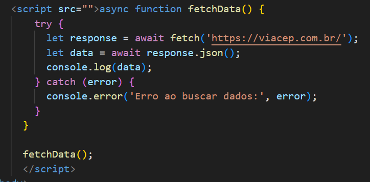

Assincronismo em JavaScript permite que o código execute operações sem bloquear o fluxo principal da aplicação, melhorando a performance em tarefas demoradas, como chamadas a APIs, leitura de arquivos ou requisições de rede. Ele é baseado no conceito de event loop, que gerencia a execução de tarefas assíncronas enquanto outras partes do código continuam sendo processadas. 
AJAX (Asynchronous JavaScript and XML) é uma técnica que permite atualizar partes específicas de uma página web de forma assíncrona, sem precisar recarregar a página inteira. Ele funciona enviando uma solicitação ao servidor (usando o objeto XMLHttpRequest ou a fetch API) e, após receber a resposta, atualiza dinamicamente o conteúdo da página. Exemplos de uso: Formulários: Enviar e validar dados sem recarregar a página. Carregamento dinâmico: Atualizar listas de produtos ou comentários sem nova carga da página. O formato JSON é o mais usado para troca de dados, embora o nome mencione XML.
Promises em JavaScript são usadas para gerenciar operações assíncronas, representando um valor que pode estar disponível no futuro. Elas ajudam a evitar o "callback hell" e tornam o código mais organizado. Principais conceitos: Uma Promise pode estar em três estados: Pending (pendente): A operação ainda não terminou. Fulfilled (resolvida): A operação foi concluída com sucesso. Rejected (rejeitada): A operação falhou. Métodos importantes: .then(): Executa uma função quando a Promise é resolvida com sucesso. .catch(): Lida com erros quando a Promise é rejeitada. .finally(): Executa uma função depois que a Promise termina, independente do resultado. Promises são úteis para trabalhar com tarefas como requisições HTTP ou leitura de arquivos, tornando o código mais fácil de entender e manter.
Async/Await simplifica o trabalho com código assíncrono em JavaScript: async: Define uma função assíncrona, que retorna uma Promise. await: Pausa a execução da função até que a Promise seja resolvida ou rejeitada, tornando o código mais legível. Isso evita o uso excessivo de .then() e facilita o tratamento de erros com try/catch, tornando o código mais simples e organizado.
A fetch API é uma interface moderna do JavaScript para realizar requisições HTTP de maneira assíncrona. Ela substitui o antigo XMLHttpRequest e oferece uma sintaxe mais simples e intuitiva para trabalhar com chamadas de rede. Principais características: Usa Promises para lidar com requisições e respostas. Suporta operações como GET, POST, e outros métodos HTTP. Retorna os dados em diversos formatos, como JSON e texto. A fetch API é amplamente usada para acessar e manipular recursos em servidores web, como APIs REST.
Promises Vantagens: Melhoram o fluxo assíncrono em comparação com callbacks (evitam o "callback hell"). Flexibilidade para encadear várias operações com .then() e .catch(). Desvantagens: Encadeamento excessivo de .then() pode tornar o código difícil de ler se houver muitas operações. Tratamento de erros pode se tornar confuso em alguns casos mais complexos. Async/Await Vantagens: Torna o código assíncrono mais legível e próximo do código síncrono. Simples tratamento de erros com try/catch, facilitando a depuração. Facilita o encadeamento de operações assíncronas sem precisar de muitos .then(). Desvantagens: Pode dificultar o uso de várias operações assíncronas concorrentes (para isso, é necessário o uso de Promise.all ou similar). Funciona apenas em funções assíncronas (async), o que requer cuidado ao misturar com código síncrono. fetch API Vantagens: Simplicidade e facilidade de uso em comparação ao XMLHttpRequest. Retorna Promises, integrando-se bem com async/await. Suporte nativo a JSON e outros formatos, simplificando o tratamento de dados da resposta. Desvantagens: Não lida automaticamente com erros de rede (é necessário verificar manualmente se o status da resposta é bem-sucedido). Falta suporte direto para rastreamento de progresso de uploads/downloads, o que XMLHttpRequest pode fazer. Não tem suporte nativo para algumas funcionalidades avançadas, como reenvio de requisições com cookies ou autenticação automaticamente. Conclusão: Promises: São uma boa escolha para trabalhar com assincronismo, mas podem resultar em código difícil de ler se não forem usadas corretamente. Async/Await: Oferecem uma maneira mais clara e organizada de lidar com assincronismo, especialmente em operações sequenciais, mas precisam de cuidados com tarefas concorrentes. fetch API: Simples e moderna para fazer requisições HTTP, mas exige verificação manual de erros e não possui suporte a algumas funcionalidades avançadas.